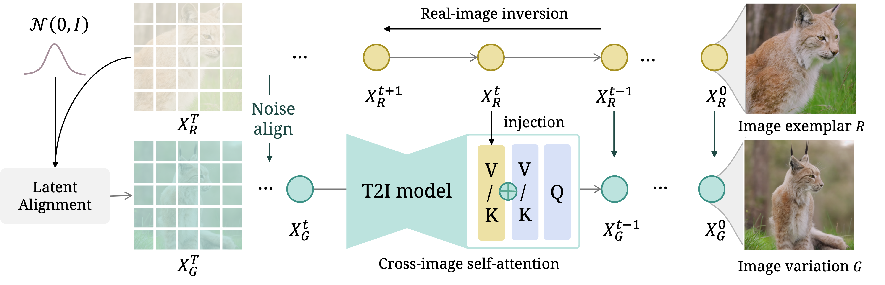

Abstract
Recent diffusion model advancements have enabled high-fidelity images to be generated using text prompts. However, a domain gap exists between generated images and real-world images, which poses a challenge in generating high-quality variations of real-world images. Our investigation uncovers that this domain gap originates from a latents' distribution gap in different diffusion processes. To address this issue, we propose a novel inference pipeline called Real Image Variation by ALignment (RIVAL) that utilizes diffusion models to generate image variations from a single image exemplar. Our pipeline enhances the generation quality of image variations by aligning the image generation process to the source image's inversion chain. Specifically, we demonstrate that step-wise latent distribution alignment is essential for generating high-quality variations. To attain this, we design a cross-image self-attention injection for feature interaction and a step-wise distribution normalization to align the latent features. Incorporating these alignment processes into a diffusion model allows RIVAL to generate high-quality image variations without further parameter optimization. Our experimental results demonstrate that our proposed approach outperforms existing methods with respect to semantic-condition similarity and perceptual quality. Furthermore, this generalized inference pipeline can be easily applied to other diffusion-based generation tasks, such as image-conditioned text-to-image generation and example-based image inpainting.
Comparisons: Image Variation


Extensions
Free-form image-conditioned generation
In addition to its ability to generate images corresponding to the exemplar image and text prompts, we have also discovered that RIVAL has a strong ability to transfer styles and semantic concepts in the exemplar for a casual text-driven image generation. With RIVAL, we can easily get a style-specific text-to-image generation. For instance, it can produce a portrait painting of a robot adorned in a sailor uniform while faithfully preserving the stylistic characteristics inherent in the provided oil painting.

More examples (with the same prompt input and exemplar in the above image)


Example-based inpainting
When abstracting RIVAL as a novel paradigm of image-based diffusion inference, we can extend this framework to enable it to encompass other image editing tasks, such as inpainting. By incorporating a coarse mask M into the generation chain, we obtain the inpainted image G.

Integration with concept customization
In addition to its ability to generate image variations from a single source image using a text prompt input for semantic alignment, RIVAL can be effectively combined with optimization-based concept customization techniques, such as DreamBooth, to enable novel concept customization.

Compare with UnCLIP
Comparision and adaptation with UnCLIP methods. We highlight texts that enhance the image understanding for each case. Our inference pipeline is adapted to the image variation model depicted in the fourth column, in contrast to the variation achieved through vanilla inference in the bottom left corner of each image.
Methods
To address this distribution gap problem for generating image variations, we propose an inference pipeline called Real-world Image Variation by Alignment (RIVAL). RIVAL is a tunning-free approach that reduces the domain gap between the generated and real-world images by aligning the denoising chain with the real-image inversion chain. Our method comprises two key components: (i) a cross-image self-attention injection that enables cross-image feature interaction in the variation denoising chain, guided by the hidden states from the inversion chain, and (ii) a step-wise latent normalization that aligns the latent distribution with the inverted latent in early denoising steps. Notably, this modified inference process requires no training and is suitable for arbitrary image input.
BibTeX
@article{zhang2023realworld,
title={Real-World Image Variation by Aligning Diffusion Inversion Chain},
author={Yuechen Zhang and Jinbo Xing and Eric Lo and Jiaya Jia},
journal={arXiv preprint arXiv:2305.18729},
year={2023},
}